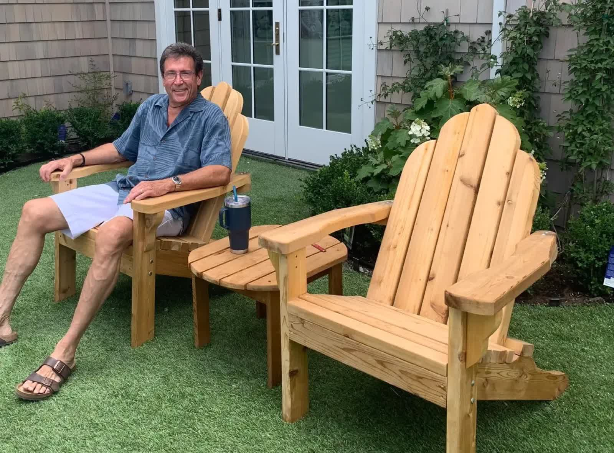

Handmade by Emma
Piece
— How it was made —
Put description of how you made it.
One-of-a-kind · designed & sewn by hand
I'm a seamstress and designer who loves turning ideas into something beautiful and one-of-a-kind.
View My WorkCompletely self-taught over the last twelve years, Emma turns sketches, fabric, and a lot of patience into gowns, costumes, and tailored pieces — each one entirely one-of-a-kind. She's headed to Rose-Hulman Institute of Technology for Engineering Design, where she'll also be designing costumes for their productions.
Every piece below was designed and sewn by hand. Click any photo to see how it was made.
Eveningwear, formal, and bridal-style gowns drafted and sewn to fit one person perfectly.
Theatrical and character costuming — head costume designer for three high-school productions.
Hems, take-ins, and refits — the kind of careful finishing that makes off-the-rack feel custom.
Original pattern drafting and from-scratch design for pieces that don't exist anywhere else.
Sewing is one half of the story — the other half is engineering, theater, and a lot of curiosity.
Took every tech-ed and engineering class her school offers:

A finalist in the MIT Beaver Works CubeSat program, run by MIT Lincoln Laboratory. The project's goal was to support NASA's Artemis missions — designing a miniature satellite to orbit the Moon and scout surface points of interest. Independently, with a small team of friends, Emma helped build and test imaging against simulated lunar environments.
Emma designed 3 simulated lunar environments (as seen below), which the team photographed using their CubeSat — a miniature satellite that can study points of interest. Both the model and the CubeSat are scaled to a realistic orbit around the Moon. Emma was solely in charge of designing, carving, and finalizing the simulated lunar environments, and also helped build a rig for the satellite to orbit around them. Click any photo to take a closer look.
Have a gown, costume, or alteration in mind? Emma would love to hear about it — every piece starts with a conversation.